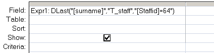

Return the last value from a specified set of records.
Syntax
DLast ( expression, domain, [criteria] )
=DLast("[Field]", "Table", "[Field] = 'MyValue'")
Key
expression The field to return.
domain The set of records, a table or a query name.
criteria Equivalent to an (optional) WHERE clause.
Any field that is included in criteria must
also be a field in domain.
To return the first or last record in a set of records (a domain), create a query sorted as either ascending or descending and set the TopValues property to 1. If the criteria will match a single record, then DFirst and DLast will match the same single row.
The DLast() function can be used in VBA or in an SQL query.
Example
In a query:

In VBA:
intOrderID = Dlast("OrderID", "qryOrders", "SupplierID = 64 ")
“If you are planning for a year, sow rice; if you are planning for a decade, plant trees; if you are planning for a lifetime, educate people” ~ Chinese Proverb
Related:
Last (SQL) - Return the last value from a query.